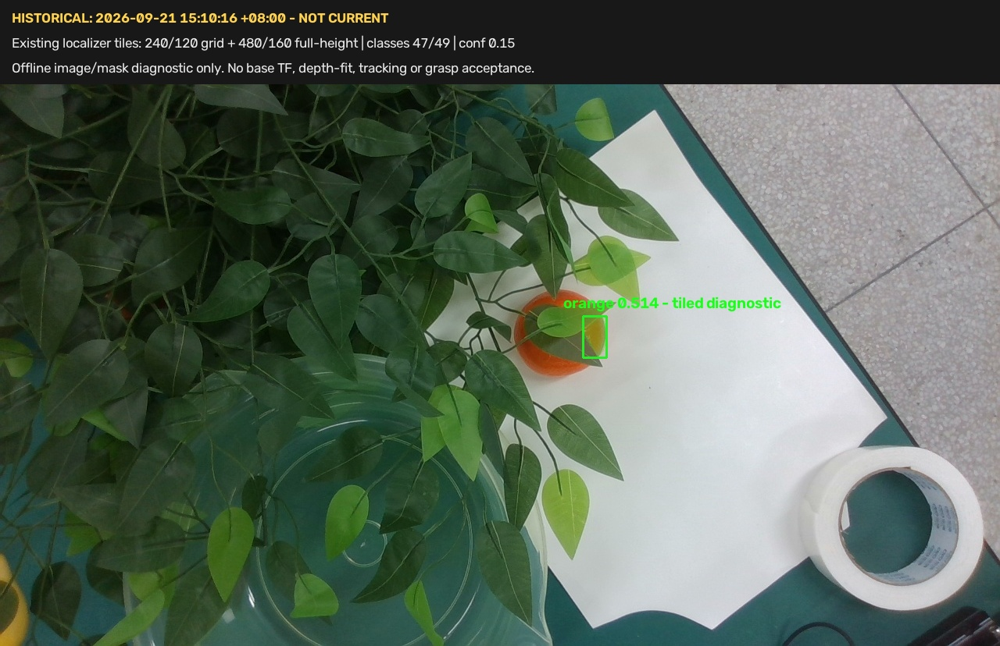

整理日期：2026-09-22 · 开发提交：9d3333f · 原验证日期：2026-09-21
状态：静态障碍模型与仅规划预览已验证；当前橘子的实物避障抓取未验收。
95项测试通过。历史基座场景3071个体素读回一致。合成绕行117个插值状态有效；完全阻挡的碰撞输入被拒绝。本轮没有机械臂或夹爪动作。相机在上轮结束时未被识别，这不是2026-09-22的新设备检查。
以下模型来自已保存的历史场景；路线图使用人工目标与人工障碍，不能视为橘子真实抓取成功。



解压后双击 START_HERE.html，用 Safari 或 Chrome 打开。页面和图片均在包内，不依赖联网。原始 Markdown、JSON、PNG/JPG、RGB-D、PLY/NPZ点云和代码均保留。原始记录中的Linux绝对路径为审计来源，未改写；请用 source_path_map.json 查找对应文件。
代码包含 ROS 2 Jazzy / MoveIt 依赖，不是可在 Mac 上直接控制机械臂的应用；在 Mac 阅读报告不需要安装 ROS。若需要恢复实验，按计划到 Linux 机器人环境验证，不自动执行包内脚本。